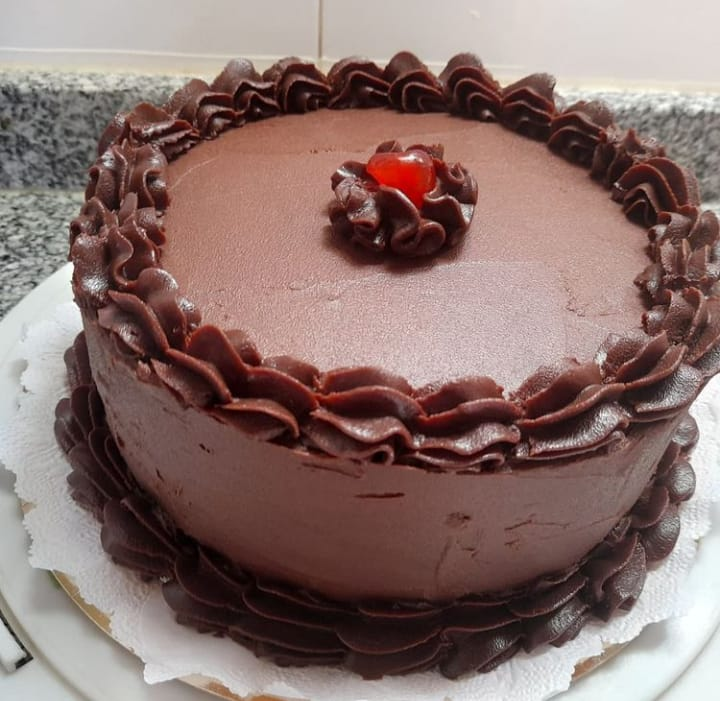
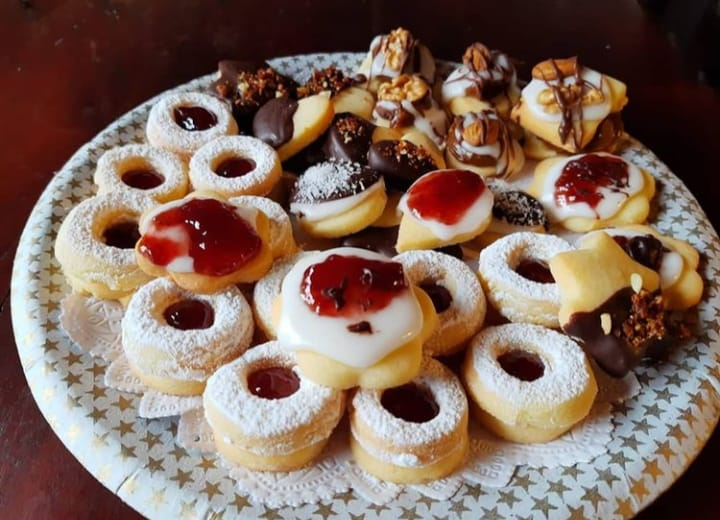

Hola!! soy Ignacio Kresser,un apasionado de la panaderia y la pasteleria, tuve la suerte de estudiar y desarrollarme profesionalmente en el IAG (Instituto Argentino de Gastronomia), Ademas de conocer a grandes profesionales de las pasteria como a OSVALDO GROOS Mis primeros pasos fueron en la panaderia familiar en la cual pude poner en practica todo lo estudiado,ademas, tomaba pedidos para familiares, amigos y referidos. Por suerte tuve la posilidad de dar talleres,seminarios y cursos en un instituto de la zona de San Miguel. Hoy con toda la experiencia obtenida, abri mi propio instituto, en el cual ofrezco distintos cursos y capacitaciones para todas las personas que quieran aprender, crecer y desarrollarse en este mundo que es la panaderia y la pasteleria.
Nuestro Emprendimiento crecio con mucho amor y pasion, somos una empresa familiar que nos dedicamos a la Gastronomia y no especializamos en la rama de la Panaderia tradicional y la Pasteleria profesional.
Arrancamos con una pequeña panaderia de barrio en el año 2006. Mi mama se encargaba del sector de la panaderia, mi papa en el sector de administrativo(en la compra de la mercaderia, la caja,etc)
Basada mi inspiracion familiar, me dedique a estudiar en el istituto IAG, para desarrollarme como Pastelero Porfesional.
Sobre mi


